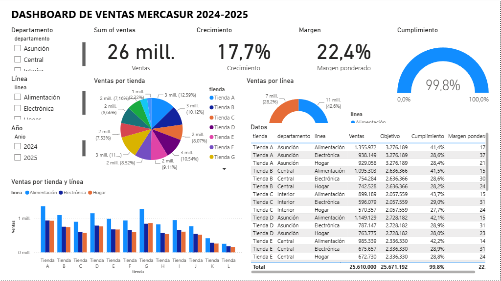
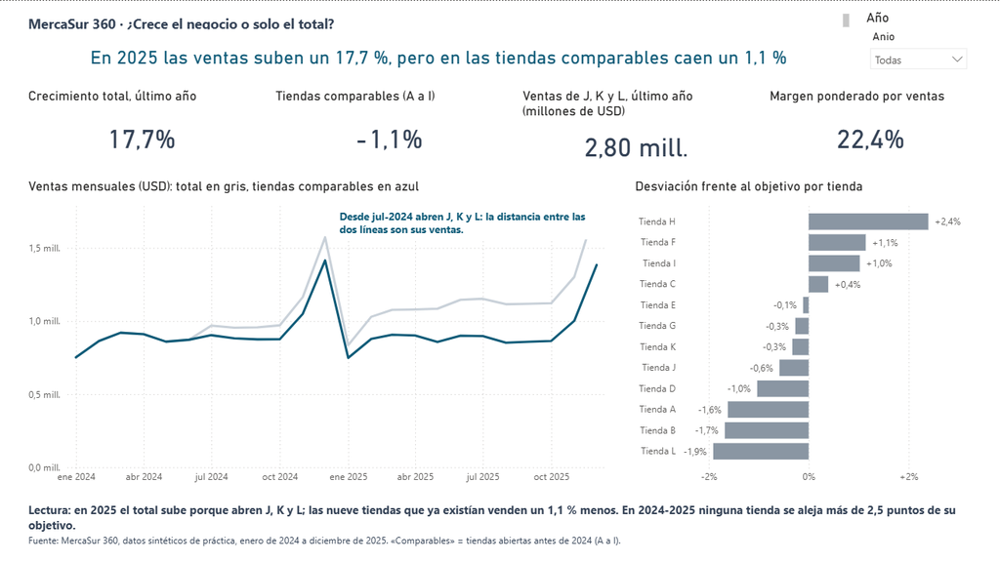

Claude y Codex dentro de Power BI
Un asistente de IA puede leer y modificar el modelo de un informe de Power BI: tablas, relaciones y medidas DAX. Lo hace a través de un servidor MCP oficial de Microsoft. Aquí lo instalas en Claude Desktop, Claude Code o Codex y lo pruebas con MercaSur hasta obtener un panel.
Qué hace y qué no
MCP (Model Context Protocol) es un estándar para que un asistente de IA use herramientas externas. Microsoft publica el servidor Power BI Modeling MCP (en versión preliminar). Con él, el asistente se conecta al motor de un Power BI Desktop abierto, a una carpeta de proyecto PBIP o a un modelo publicado en Fabric, y trabaja con 22 herramientas: tablas, columnas, medidas, relaciones, consultas DAX, roles, traducciones y otras.
No crea visuales. El servidor solo toca el modelo semántico. Las páginas y los gráficos se hacen a mano o se escriben como ficheros del formato de proyecto de Power BI (PBIP, con el informe en PBIR), que Claude Code o Codex pueden editar como cualquier otro fichero. El ejemplo de MercaSur usa las dos vías.
--readonly. La primera vez el servidor pide aceptar su licencia: léela y acéptala tú.Requisitos
- Windows con Power BI Desktop (el servidor se conecta a su motor local).
- Node.js 18 o superior, para lanzar el servidor con
npx(nodejs.org). Comprueba connode -v. - Uno de estos clientes: Claude Desktop, Claude Code o Codex (CLI de OpenAI). También vale VS Code con GitHub Copilot y la extensión Power BI Modeling MCP.
Instalación
Las tres opciones arrancan el mismo servidor: npx -y @microsoft/powerbi-modeling-mcp@latest --start. En Windows se lanza a través de cmd /c, porque npx es un script y no un ejecutable.
Claude Desktop
- Ajustes → Desarrollador → Editar configuración. Se abre
claude_desktop_config.json. - Añade el servidor (si ya hay otros en
mcpServers, ponlo a su lado):{ "mcpServers": { "powerbi": { "command": "cmd", "args": ["/c", "npx", "-y", "@microsoft/powerbi-modeling-mcp@latest", "--start"] } } } - Guarda y cierra Claude Desktop del todo (también el icono de la bandeja). Al volver a abrirlo, el conector powerbi aparece en el menú de herramientas.
Si prefieres no depender de Node.js, instala la extensión de VS Code, busca dentro de su carpeta extension\server\powerbi-modeling-mcp.exe y pon esa ruta en "command" (con barras dobles \\) y "args": ["--start"].
Claude Code
claude mcp add powerbi -- cmd /c npx -y @microsoft/powerbi-modeling-mcp@latest --start
claude mcp listDentro de una sesión, /mcp muestra si está conectado.
Codex
codex mcp add powerbi -- cmd /c npx -y @microsoft/powerbi-modeling-mcp@latest --start
codex mcp listQueda guardado en ~/.codex/config.toml, donde también puedes escribirlo a mano:
[mcp_servers.powerbi]
command = "cmd"
args = ["/c", "npx", "-y", "@microsoft/powerbi-modeling-mcp@latest", "--start"]Dentro de Codex, /mcp muestra los servidores activos.
Comprobar que funciona
- Abre en Power BI Desktop el informe con el que vas a trabajar.
- Pide al asistente: «Conéctate a 'MercaSur_Panel' en Power BI Desktop y dime qué tablas y medidas tiene.» (el nombre es el del fichero abierto).
- La primera vez te pedirá aceptar la licencia del servidor y, antes de cada cambio, tu confirmación.
Ejemplo: un panel de MercaSur
MercaSur 360 es la cadena de tiendas ficticia del curso: doce tiendas en Paraguay, ventas mensuales de 2024 y 2025 y un objetivo por semestre. Los tres ficheros están en ejemplo_mercasur/datos.
La pregunta del panel: ¿crece el negocio o solo crece el total? En 2025 las ventas suben un 17,7 %, pero tres de las doce tiendas (J, K y L) abrieron en 2024 y 2025. Si se miran solo las nueve que ya existían, las ventas bajan un 1,1 %.
Vía 1. El asistente construye el modelo con MCP
Abre Power BI Desktop con un informe en blanco guardado como MercaSur_Panel, importa los tres CSV (Inicio → Obtener datos → Texto/CSV) y pide al asistente, por turnos:
Anios = SELECTCOLUMNS ( GENERATESERIES ( 2024, 2025, 1 ), "Anio", [Value] ) y relaciona Ventas[Anio] y Presupuesto[Anio] con Anios[Anio], y Ventas[id_tienda] y Presupuesto[id_tienda] con Tiendas[id_tienda].»El paso 6 es el importante: el asistente escribe DAX con soltura y también se equivoca con soltura. Una medida que da un número creíble pero falso no la detecta nadie si no hay una cifra de control calculada por otro camino.
Cifras de control
Calculadas con Python sobre los CSV y comprobadas en el motor de Power BI Desktop (tools/probar_dax_mercasur.ps1: 22 de 22).
| Medida | Filtro | Valor |
|---|---|---|
| Ventas | sin filtro | 25.610.000,06 |
| Ventas | 2024 / 2025 | 11.764.148,43 / 13.845.851,63 |
| Crecimiento | 2025 o sin filtro | 17,7 % |
| Crecimiento | 2024 | en blanco (no hay 2023) |
| Ventas comparables | 2025 | 11.049.222,28 |
| Crecimiento comparables | 2025 o sin filtro | −1,1 % |
| Ventas tiendas nuevas | 2025 | 2.796.629,35 |
| Objetivo / Cumplimiento | 2025 | 13.897.696 / 99,6 % |
| Desviación objetivo | tienda H / tienda L | +2,4 % / −1,9 % |
| Margen ponderado | 2025 / sin filtro | 22,2 % / 22,4 % |
| Titulo panel | 2025 | «En 2025 las ventas suben un 17,7 %, pero en las tiendas comparables caen un 1,1 %» |
Vía 2. El asistente escribe el panel como proyecto PBIP
Para los visuales, Claude Code o Codex trabajan sobre ficheros. Activa en Power BI Desktop (Archivo → Opciones → Características en versión preliminar) el guardado como proyecto .pbip con informe PBIR, guarda el informe como proyecto y pide al asistente, desde la carpeta del proyecto, por ejemplo: «En MercaSur_Panel.Report añade una página "Después" con el título dinámico arriba, cuatro tarjetas (crecimiento total, comparables, ventas de J, K y L, margen), una línea mensual de ventas totales en gris y comparables en azul, y barras de desviación frente al objetivo por tienda, ordenadas.» Cierra y vuelve a abrir el .pbip para ver el resultado.
El panel de este ejemplo está hecho así y lo puedes abrir: descarga el repositorio (Code → Download ZIP), abre ejemplo_mercasur/MercaSur_Panel/MercaSur_Panel.pbip y pulsa Inicio → Actualizar (los datos van dentro del proyecto). Lo genera tools/gen_pbip_mercasur.py.
Dos paneles con los mismos datos
El proyecto tiene dos páginas. La primera es el panel que suele salir cuando se pide «un dashboard de ventas», a una persona o a una IA, sin más indicaciones. La segunda aplica lo visto en el Módulo 1.


| Criterio del Módulo 1 | Antes | Después |
|---|---|---|
| Mensaje en el título (BLUF) | «Dashboard de ventas»: no dice nada | Título con la conclusión, calculado con DAX: cambia si cambian los datos |
| Comparación justa | +17,7 % sin más: el titular que engaña | Total frente a tiendas comparables, lado a lado |
| Un visual por pregunta | Doce elementos sin orden de lectura | Título, cuatro cifras, dos gráficos y una lectura |
| Forma adecuada | Tarta de doce porciones, anillo, medidor | Línea para el tiempo, barras ordenadas para comparar tiendas |
| Escala honesta | Cumplimiento en un medidor de 0 a 100 %: todo parece igual | Desviación frente al objetivo desde cero: se ve quién se aleja |
| Color con intención | Un color por categoría, sin significado | Gris para el contexto y un solo azul para lo que importa |
| Cifras legibles (B3.16) | «26 mill.» bajo «Sum of ventas»: suma los dos años sin decirlo | «2,80 mill.» del último año, con la unidad en el título del visual |
| Etiqueta directa y anotación (B3.13, B3.14) | Leyendas lejanas, ningún texto junto a los datos | Colores explicados en el título y una nota en el punto donde abren las tiendas nuevas |
| Texto alternativo (B3.11) | Ninguno | En cada visual, con la conclusión |
| Fuente, periodo y definiciones | Ninguna | Pie con fuente, periodo y qué es «comparable» |
| Datos correctos | La tabla repite el objetivo de la tienda en cada línea y da cumplimientos de entre el 26,5 % y el 43,7 % | El objetivo solo se cruza por tienda y año |
El último punto no es de diseño: en el panel «Antes» la tabla cruza ventas por línea con un objetivo que no está relacionado con la línea, y Power BI no avisa. Pásale al equipo de agentes una captura de cada panel y comprueba si lo detecta: Equipo de agentes.
Los dos paneles se pueden valorar en Comprueba tu panel (botón «Probar con el ejemplo»): «Antes» saca 3,9 y «Después» 10, con las reglas de esa pestaña. Sube allí también tu propio .pbix.
Qué se ha comprobado y qué no
- El servidor MCP arranca en Windows con el comando de esta página y ofrece sus 22 herramientas (3-nov-2026, versión publicada en npm ese día).
- Las medidas, relaciones y consultas de Power Query del ejemplo funcionan en Power BI Desktop 2.159: 22 de 22 cifras de control.
- El proyecto PBIP abre en Power BI Desktop y muestra las dos páginas de las capturas.
- No se ha grabado aquí una conversación completa con Claude Desktop o Codex usando el servidor: requiere aceptar su licencia con tu cuenta. Las respuestas del asistente variarán; por eso el paso 6 compara con cifras fijas.
Fuentes: README de microsoft/powerbi-modeling-mcp; ayuda de claude mcp add --help (Claude Code 2.1) y codex mcp add --help (Codex CLI 0.163).